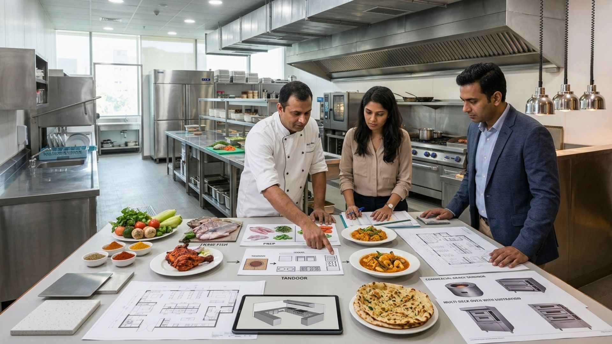
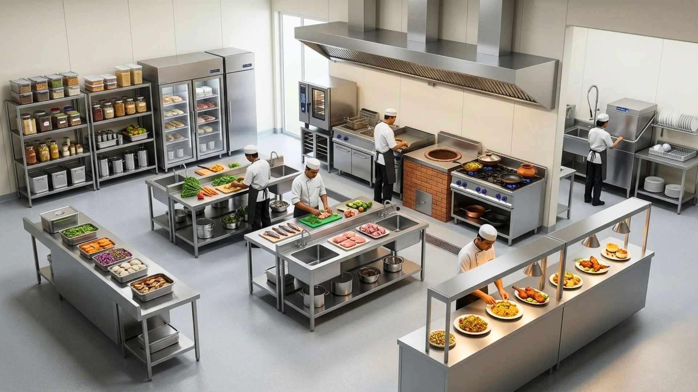
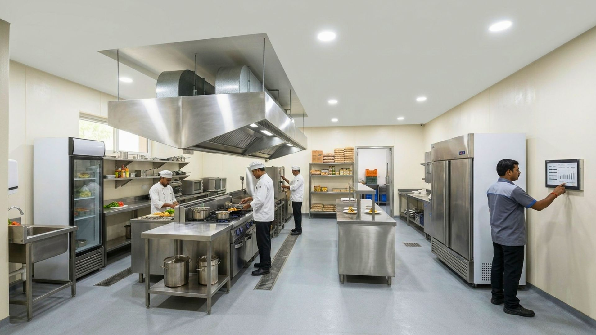
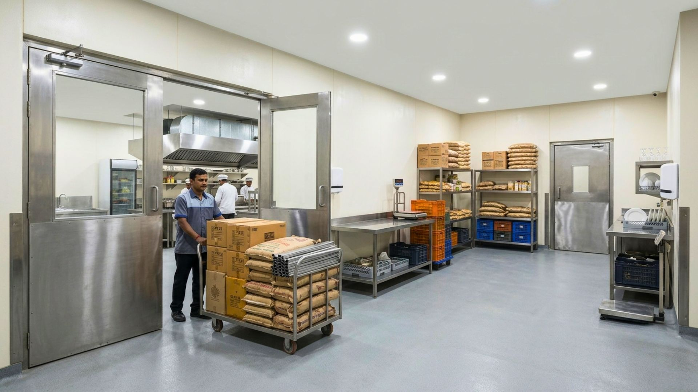
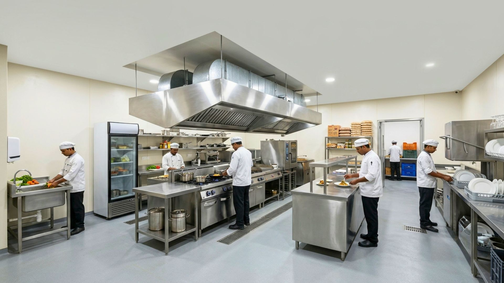
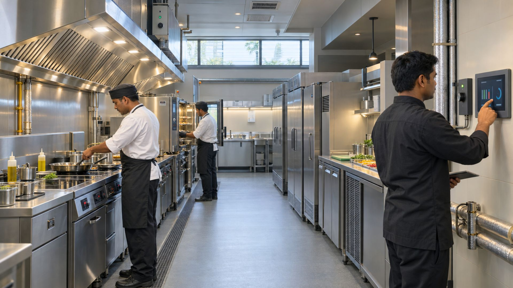
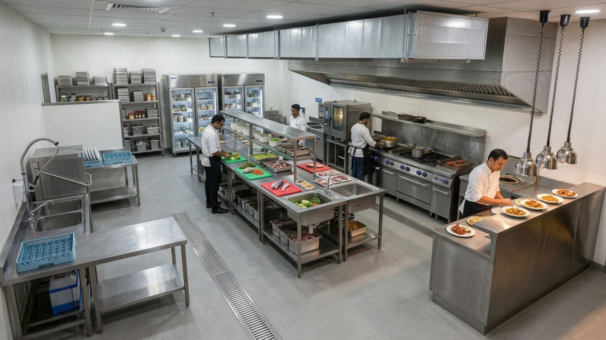
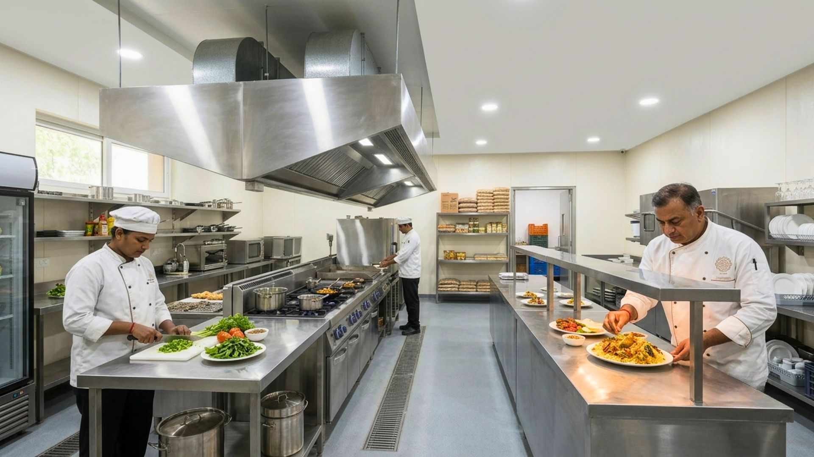
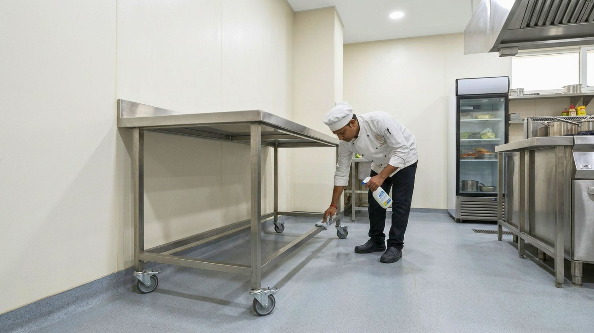
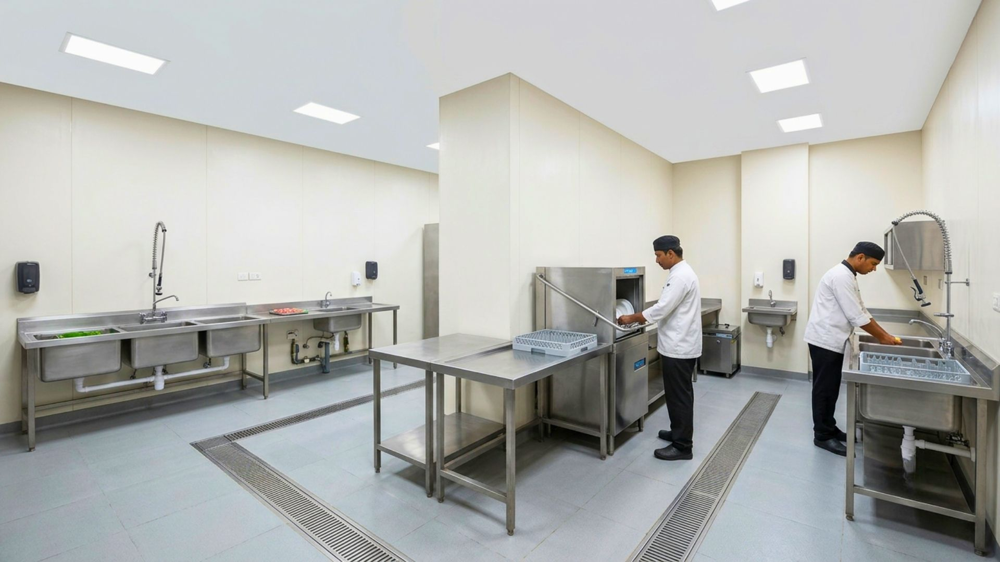

We've been designing hospitality venues for over 15 years, and there is no one design that fits all. While every enterprise is unique, specific commercial kitchen design guidelines must be followed at all times.
1. Fix the Menu

Kitchen layout should accommodate the menu items. The prep area design depends on the ingredients needed — a seafood-focused menu, for instance, requires a spacious area for proper cleaning.
2. Allocate Sufficient Space to Various Components

Five essential sections must be planned: cleaning/washing, storage, food preparation, meal cooking, and service. Underplanning any one of these creates a bottleneck for the rest.
3. Optimize Kitchen Design Layout

Four customisable layout styles exist: assembly-style, zone style, island style, and ergonomic style layout — pick the one that matches your menu complexity and volume.
4. Have a Spaced-Out Delivery Door

Doors must accommodate delivery carts and large equipment, with storage areas positioned away from high-traffic kitchen zones.
5. Get in as Much Storage Space as Possible

Plan for future expansion. Adequate storage prevents roadblocks when extending menus or increasing supplies down the line.
6. Energy Efficiency

Restaurants consume significant energy. An experienced interior designer can help you cut your running costs drastically through smarter layout and equipment choices alone.
7. Air Ventilation and Maintenance

Proper ventilation manages smoke and grease, maintains moderate temperatures, and ensures regulatory compliance through regular inspections.
8. Ensure Adequate Lighting

Warm lighting makes the food look more visually appealing. A colour range of 2700–3000K is recommended for optimal food appearance in prep and plating areas.
9. Use Cleaning-Friendly Materials

Select wall and ceiling materials resistant to stains, grease, and grime to minimise maintenance costs over the life of the kitchen.
10. Pay Attention to Your Plumbing

Install air-gapped drains and grease traps to prevent clogging and contamination of sink systems — plumbing issues are some of the most disruptive to fix once a kitchen is live.
Closing Statement
The most important thing is to strategically plan the various components of the kitchen so that they can function in an orderly and seamless fashion — get the sequencing right, and everything downstream runs smoother.
Designing your restaurant kitchen? At SprintCo, we plan kitchens around your menu, not the other way around. Let's talk about your project.